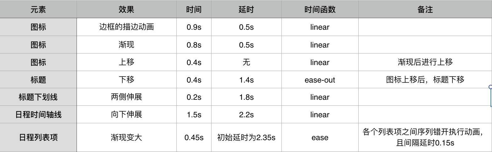
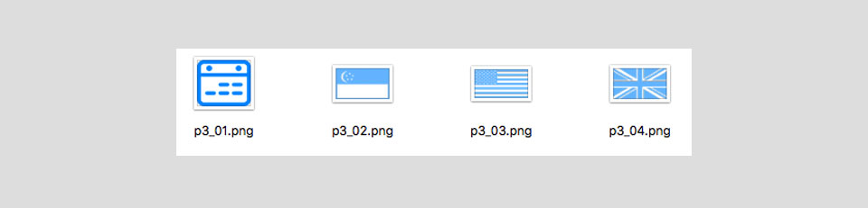
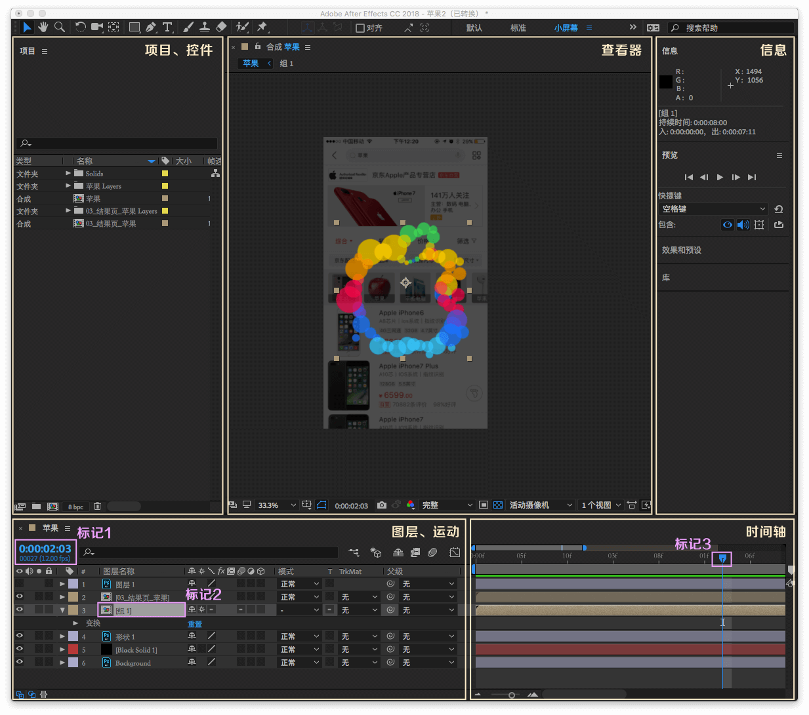
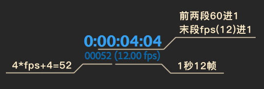
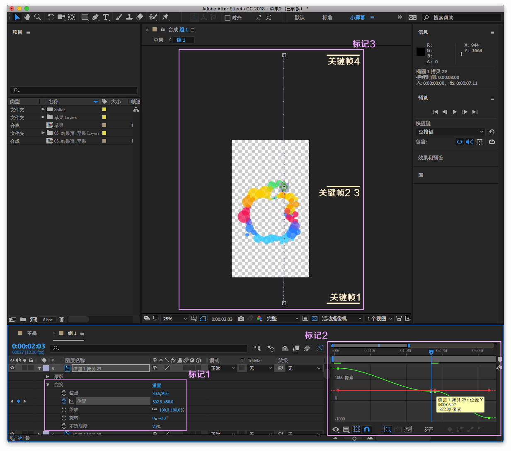
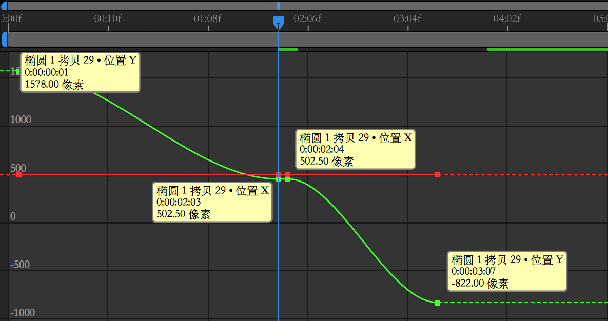

动效开发 3：补间动画
我们已经知道如何利用 CSS3 让网页元素动起来，也知道怎么样让它变得立体，接下来为大家讲解在实际工作过程中最为常见的两种基础动画形式 ——「补间动画」和「逐帧动画」，先从「补间动画」说起。
「补间动画」（Tween Animation）指的是：人为设定动画的关键状态（也就是关键帧），而关键帧之间的过渡过程则由计算机处理渲染的动画处理形式。
回想一下前面两个小节中的各种案例，不难发现 transition 属性实现的动画都属于补间动画，而对于 animation 属性来说，使用了除 steps 和 frames 以外的时间函数（如 ease、linear 或 cubic-bezier 等）的动画都属于补间动画。
可以说补间动画是 CSS3 动画中最常见的一种形式，常见到平时工作中几乎所有的动效需求案例都能找到它的影子。
案例实战 1 - 京东 2017 海外招聘 H5
我们以京东 2017 海外招聘 H5 的第三屏动画为例，为大家讲解如何利用 CSS3 实现补间动画。
步骤 1 - 动效审查与分解
动效审查与分解是动效开发的首要步骤，不管我们开发的是「补间动画」还是「逐帧动画」。根据提供的设计稿，和设计师一起围绕动效进行沟通审查（事实上有经验的设计师会在开始视觉设计之前提前和开发同学沟通动效，设计稿定稿之后再一起回顾沟通），了解设计师对动画时序的想法，并根据自己的开发经验评估预期动效设计的合理性，必要的时候给予设计稿调优建议。
动效审查完毕后，可以输出一张动画属性分解表，以便于后续开发的时候进行追溯调优，如下图所示。

步骤 2 - 根据需求进行切图
根据动画属性分解表，先进行切图（可回顾小册的第 2 小节），将需要添加动效的元素单独切出，如下图所示。

步骤 3 - 页面编码开发
切图完成后，我们根据设计稿进行构建还原，编写对应的页面 HTML 结构和样式。
具体的 HTML 代码和 SCSS 样式如下所示。
<!-- S 宣讲行程时间轴 -->
<div class="timeline">
<div class="timeline_tit">
宣讲行程
<span>Campus Talk Schedule</span>
</div>
<div class="timeline_icon">
<svg viewBox="0 0 102 102">
<circle cx="51" cy="51" r="50" transform="rotate(90 51 51)"></circle>
</svg>
</div>
<ul class="timeline_list">
<li class="timeline_item timeline_item_sp">
<span class="timeline_item_cnt flag"><i class="flag_sin"></i></span>
<span class="timeline_item_cnt country"></span>
<b></b>
</li>
<li class="timeline_item">
<span class="timeline_item_cnt time">09 / 20</span>
<span class="timeline_item_cnt city">INSEAD</span>
<b></b>
</li>
<li class="timeline_item">
<span class="timeline_item_cnt time">09 / 21</span>
<span class="timeline_item_cnt city">NTU</span>
<b></b>
</li>
<li class="timeline_item timeline_item_sp">
<span class="timeline_item_cnt flag"><i class="flag_us"></i></span>
<span class="timeline_item_cnt country">U.S</span>
<b></b>
</li>
<li class="timeline_item">
<span class="timeline_item_cnt time">09 / 26</span>
<span class="timeline_item_cnt city">UCLA</span>
<b></b>
</li>
<li class="timeline_item">
<span class="timeline_item_cnt time">09 / 28</span>
<span class="timeline_item_cnt city">UC Berkely</span>
<b></b>
</li>
<li class="timeline_item">
<span class="timeline_item_cnt time">10 / 05</span>
<span class="timeline_item_cnt city">Wharton</span>
<b></b>
</li>
<li class="timeline_item timeline_item_sp">
<span class="timeline_item_cnt flag"><i class="flag_uk"></i></span>
<span class="timeline_item_cnt country">U.K</span>
<b></b>
</li>
<li class="timeline_item">
<span class="timeline_item_cnt time">10 / 29</span>
<span class="timeline_item_cnt city">LBS</span>
<b></b>
</li>
<li class="timeline_line"></li>
</ul>
</div>
<!-- E 宣讲行程时间轴 -->
.timeline {
position: absolute;
width: 100%;
height: 100%;
left: 0;
top: 0;
&_tit {
position: relative;
padding: rem(70px) 0 rem(30px);
font-size: rem(60px);
line-height: rem(90px);
color: #fff;
text-align: center;
span{
display: block;
font-size: rem(36px);
line-height: rem(50px);
}
&:after{
content: "";
position: absolute;
width: rem(92px);
height: 1px;
background: #ff0000;
bottom: 0;
left: 50%;
margin-left: rem(-46px);
};
}
&_icon {
position: relative;
width: rem(102px);
height: rem(102px);
margin: rem(36px) auto 0;
background: url("images/p3_01.png?__inline") no-repeat center;
background-size: rem(57px) rem(50px);
svg {
width: rem(102px);
height: rem(102px);
stroke: #0084ff;
stroke-width: 2px;
fill: none;
stroke-dasharray: 400;
}
}
&_list {
position: relative;
bottom: 0;
width: rem(900px);
height: rem(1224px);
margin: 0 auto;
padding: rem(68px) 0;
display: flex;
flex-direction: column;
color: #fff;
}
&_line {
position: absolute;
width: 1px;
height: 100%;
background: #0084ff;
top: 0;
left: 50%;
}
&_item {
position: relative;
flex: 1;
display: flex;
align-items: center;
z-index: 9;
b {
position: absolute;
width: rem(16px);
height: rem(16px);
border-radius: 50%;
left: 50%;
top: 50%;
margin: rem(-7px) 0 0 rem(-7px);
z-index: 1;
background: #fff;
box-shadow: 0 0 0 rem(13px) #0084ff;
}
&_sp {
b{
background: #0084ff;
box-shadow: none;
}
}
&_cnt {
flex: 1;
padding: 0 rem(100px);
&:nth-child(1){
text-align:right;
};
&:nth-child(2){
text-align:left;
};
&.flag{
width: rem(111px);
height: rem(65px);
i{
display: inline-block;
width: rem(111px);
height: rem(65px);
background-size: 100%;
}
}
&.country{
font-size: rem(36px);
color: #66b5ff;
}
&.time{
font-size: rem(36px);
}
&.city{
font-size: rem(48px);
}
.flag_sin{
background: url("images/p3_02.png?__inline") no-repeat;
}
.flag_us{
background: url("images/p3_03.png?__inline") no-repeat;
}
.flag_uk{
background: url("images/p3_04.png?__inline") no-repeat;
}
}
}
}
步骤 4 - 结合动画属性分解表实现动画
我们从步骤 1 获得了动画属性分解表，下面根据它来一一实现动画。
1. 图标圆形边框的路径描边动画
这样的描边动画效果无法用 CSS3 的方案实现，但可以通过 SVG 的方案来实现。
1.1 确保 SVG 图形设置 stroke 属性实现描边效果
svg {
// 设置描边
stroke: #0084ff;
stroke-width: 2px;
fill: none;
}
1.2 对 SVG 图形设置 stroke-dasharray 属性
stroke-dasharray 属性是用来设置描边的虚线的图案范式，也就是设置实线段和虚线段的宽度。
我们对 stroke-dasharray 属性作如下设置，其含义就是，实线段的长度为 320，而虚线段的长度为 0，所以我们看到的仍是一条实线的描边。
stroke-dasharray: 320; // stroke-dasharray: 320 0; 的等价写法
接下来我们利用 stroke-dashoffset 属性使得这条实线描边可以出现和消失。
1.3 利用 stroke-dashoffset 属性实现补间动画
stroke-dashoffset 属性指定了虚线路径起始点的距离。
因此，当我们把 stroke-dashoffset 的值设置为 circle 的路径总长度时，描边轨迹就会完全不可见，而逐步减小其值至 0 时，可使之完全呈现。
我们可以通过脚本获取描边路径的总长度：
// 我们取整为320
var path = document.querySelector('circle').getTotalLength(); // 等于313.6517333984375
最后，我们只需要设置初始关键帧和结束关键帧，对 stroke-dashoffset 属性值从 320 变为 0 ，再根据动画时间表里的动画时间、延时以及时间函数进行动画属性设置，就实现了 SVG 路径描边的补间动画，代码如下所示。
.part3.in {
.timeline_icon {
svg {
animation: on_tl_iconsvg .5s 0.9s linear both;
}
}
}
@keyframes on_tl_iconsvg{
0% {stroke-dashoffset: 320;}
100% {stroke-dashoffset: 0;}
}
对于 animation-fill-mode 属性的详解，笔者推荐《理解 animation-fill-mode 属性》一文，这里不作赘述。
2. 图标的渐现和上移动画
图标的渐现和上移效果都是作用于图标而言的，因此我们把这两个动画合在一起写。
对于渐现渐隐效果，为了获得更好的性能，我们使用 opacity 属性，而不是 display、visibility 属性；出于同样的考虑，对于偏移效果，则使用 translate 属性，而避免使用 left、right、bottom、top 属性。
选取好合适的 CSS 属性之后，我们最后根据动画分解表进行分析实现。从表中可知，渐变效果的时间为 0.8s，占总时间 1.2s 的比率为 66.66%，再配合从设计稿测量得到的偏移值 480px，最终我们很快就写出了动画代码，如下所示：
.part3.in {
.timeline_icon {
animation: on_tl_icon 1.2s .5s linear both;
}
}
@keyframes on_tl_icon{
0% {transform: translateY(rem(480px));opacity: 0}
// 先渐现
66.66% {transform: translateY(rem(480px));opacity: 1}
// 再向上偏移
100% {transform: translateY(0);opacity: 1}
}
标题、标题下划线、日程时间轴线的动画实现，也是类似图标渐现和上移动画的做法，这里就不展开了。
下面，我们来详细讲讲如何实现「日程时间轴的列表项按次序出现」的补间动画。
3. 日程时间轴的序列动画
日程时间轴的列表项按次序出现的补间动画，这种对多个元素使用相同的动画效果，且各个元素动画执行时机依次错开的、整齐有序的序列动画效果，我们可称之为序列动画。
首先，我们实现列表项展开的动画效果，代码如下所示。
@keyframes on_tl_item {
0% {transform: scale(0,0); opacity: 0}
100% {transform: scale(1,1); opacity: 1}
}
接着，我们利用 animation-delay 属性进行延时控制动画执行时机的依次错开。
根据动画分解表，我们知道动画时长为 0.45s，初始延时 2.35s，而每个列表项之间间隔 0.15s，因此推算得出第 i 个列表项（1 <= i < 10）的延时为（2.2s + 0.15s + i )。
配合 SCSS 的 @for 控制指令用法，我们可以快速地循环输出样式，代码如下所示。
.part3.in {
.timeline_item {
animation: on_tl_item 0.45s ease both;
@for $i from 1 to 10 {
&:nth-child(#{$i}) {
animation-delay: (2.2s + 0.15s * $i);
}
}
}
}
利用 @for 控制指令为多个列表项元素的相同动画效果动态生成样式，并且通过 animation-delay 来控制依次错开动画执行的时机，从而形成整齐有序的序列动画效果。
至此，整个第三屏动画就完成了，查看 完整的 DEMO 进行体验。
案例实战 2 - 京东 App 搜彩蛋：把动效设计的锅扔给设计师
我们知道，动效开发的流程往往是：
- 设计师和开发童鞋一起构思整个动画的方案
- 设计师根据动画方案出设计稿
- 开发童鞋根据设计稿及动画方案自由发挥，进行动效的设计与开发
在这样的流程下，动画成品效果的好与坏往往取决于开发童鞋在动效设计方面的知识和经验是否丰富，而这对于初次接触动效开发的童鞋来说恐怕是极大的挑战。
事实上，大多数前端开发者在动效设计方面并没有太多的积累，难以做出令人拍手称赞的动画效果。而设计师（或动效设计师）却刚好相反，因为他们一般都擅长使用做动效设计的工具 —— Flash 或 AE（After Effects）。
把「动效的设计」交给更专业的设计师，让他们输出完整的「动效稿」，再让开发童鞋依据「动效稿」转换成为网页代码，未尝不是一种好的动效开发方式。（笔者注：腾讯 TGideas 团队早在两三年前就开始探索和实践这种动效开发方式，积累了丰富的实战经验。）
由设计师来负责动效的设计，对项目来说还有以下好处：
- 设计师与开发的排期由「线性」变为「部分重叠」：设计师交付静态设计稿后，开发就能进行视觉还原构建页面，设计师此时即可进入动效设计。
- 设计师将动效设计导出为视频，提前取得各方满意度，避免开发期间的反复沟通修改。
对开发童鞋来说，我们会迎来一个新的问题：如何还原「动效稿」，将它转换成保真的网页动效？
我们接下来以「京东 2017 年 App 搜彩蛋项目 —— 苹果彩蛋」为例，为大家解读如何基于 AE 稿开发补间动画（其思路也适用于逐帧动画）。
读者可以自行 下载本案例所用的 AE 稿。
基于 AE 实现 Web 动效
基于 AE 手工实现 Web 动画的主要工作有两个：
- 取参 —— 在动效稿上拿到元素的参数信息，如 x/y/z、rotation、动画设定等
- 开发 —— 通过适当的 Web 技术进行动画开发，如 CSS3/Canvas/SVG 等
取参及 AE 界面使用指引
打开 apple.aep 文件，AE 界面如下：

点击 「信息模块」预览面板的播放按钮或拖动「时间轴模块」的 标记3 即可预览动画。
为了利用 CSS3 animation 属性实现最终的动效，我们需要获取以下关键设置信息：
- 动画持续时间
animation-duration - 关键帧之间的时间轴函数
animation-timing-function - 动画延时时间
animation-delay
由于该动画是一次性的，无需设置/获取动画的重复次数（animation-iteration-count）及执行方向（animation-direction）。
我们选取整个苹果彩蛋动画中一个小圆圈（共 60 个）为示例代表，其余元素同理。
现在我们把目光投向「图层、运动模块」的 标记1：

（标记1 —— FPS）
由上图可得，FPS 为 12，即 1 秒 12 帧， 1 帧 0.0833 秒。
通过观察苹果彩蛋动画的预览效果可以发现，每个圆的延时时间（animation-delay）、时间轴函数（animation-timing-function）和持续时间（animation-duration）均不相同。换句话说，每个圈都是一个独立的补间动画，所有元素组合起来才是一个完整的补间动画。
双击「标记 2」，进入编组以查看每个圆的信息。

（子元素——圆）
在「查看器」或「图层、运动模块」任意选中一个圆，展开其 变换 属性并单击 位置（标记1），即可显示右侧的元素运动路径（标记2）。同时这也反映了动画的变化速率（即时间轴函数 animation-timing-function），后面会做进一步解读。
值得注意的是：位置 前面的时钟图标为蓝色时，代表当前属性有过渡动画。

（某个圆的时间轴）
综上所述，可从上图得出以下信息点：
- 该元素共有 4 个关键帧（绿线上的小方块）
- 只有 Y 轴上发生位移运动（绿线），X 轴上则是静止状态（红线）
- 延时时间为 1 帧（绿线前面的虚线处）
- 中间停留时间（第2、3 关键帧之间）为 1 帧
- 过渡时间为 42 帧（3*12 + 7 - 1）。注意要减去延时时间（1），因为 02:03 包含了它
利用 animation 属性实现动画
在拿到动画所需的各项设定参数信息后，便可以利用我们熟悉的 animation 实现某个圆的补间动画了。
<div class="circle-29"></div>
/* 默认定位在第2（或3）帧以让元素默认显示在屏幕内，便于开发调试。 */
.circle-29 {
width: 60px;
height: 60px;
background-color: rgba(0, 224, 93, .7);
position: absolute;
left: 473px;
top: 348px;
border-radius: 50%;
animation-name: circle29;
animation-duration: 3.5s; /* 42 * (1 / 12) */
animation-delay: 0.0833s; /* 1 * (1 / 12) */
animation-fill-mode: both;
animation-timing-function: ease-in-out;
}
@keyframes circle29 {
0% {
transform: translate3d(0, 1175px, 0);
}
61.90% { /* (2 * 12 + 3 - 1) / 42，注意要减去延时时间（1），因为 02:03 包含了它。下同。*/
transform: translate3d(0, 0, 0);
}
64.29% {
transform: translate3d(0, 0, 0);
}
100% {
transform: translate3d(0, -1225px, 0);
}
}
虽然略微烦琐，但是省去反复调整动画设定的时间，基本做到一次开发即可输出满意的效果。
其余元素参考以上步骤执行即可完成整个苹果彩蛋动画。
假设没有动画预览效果和动效稿，仅靠开发童鞋自由发挥编码完成一个由 60 多个元素组成的动画，简直难于上青天（至少对于笔者来说）。
效果演示
上述实现代码使用 CodePen 做演示，读者可以自行查看体验。
或扫码体验：
（基于 AE 稿实现的补间动画 —— 2017 年京东 App 搜索彩蛋 ）
小结
本小节以 2 个实际工作中的案例 —— 「2017 京东海外招聘 H5」 及 「2017 年京东 App 搜索彩蛋」，分别为大家讲解了「如何利用 CSS3 实现补间动画」及「基于 AE 稿实现补间动画」的完整过程。在实际工作过程中，如果动画方案较为复杂，可以尝试后者，让设计师使用 AE 设计完整的动画，开发的时候基于 AE 稿来还原动效。当然，无论是哪一种方式，目前看来都免不了较大的人肉开发成本，虽然业界出现了一些能够直接将 AE 动画导出为 Web 动画的插件或开源库（代表性的有 Bodymovin 和 lottie-web，笔者还尝试使用 Bodymovin 实现了前面的苹果彩蛋动画，查看 DEMO），但其实际可用性还有待进一步的验证。